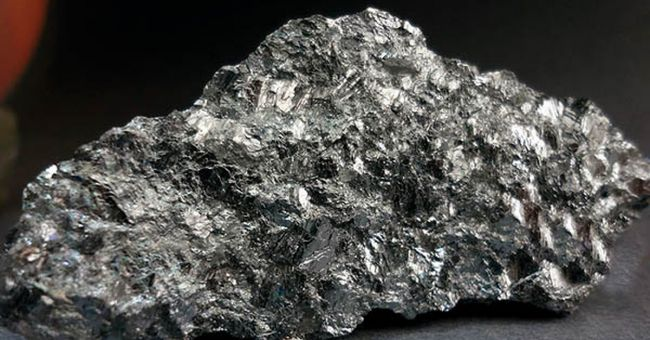

Сурьма
Сурьма́ (химический символ — Sb, от лат. Stibium) — химический элемент 15-й группы (по устаревшей классификации — главной подгруппы пятой группы, VA) пятого периода периодической системы химических элементов Д. И. Менделеева; имеет атомный номер 51.

Сурьма известна с глубокой древности; так, в библейские времена порошок сурьмяного блеска (природный минерал антимонит) применялся в качестве косметического средства, в странах Востока за 3 тыс. лет до н. э. изготавливали сосуды из литой сурьмы. Латинское название сурьмы stibium (от греч. στίβι) встречается у Плиния Старшего. В конце 18 в. в Западной Европе для обозначения сурьмы стало применяться средневековое латинское название antimonium, которое предположительно произошло от греческого ἄνϑεμον – цветок, по виду сростков игольчатых кристаллов сурьмяного блеска. Подробное описание свойств и способов получения сурьмы (которую считали разновидностью металлов) и её соединений дано в книге алхимика Василия Валентина «Триумфальная колесница антимония» (1604). Русское название «сурьма» произошло от турецкого sürme (порошок сурьмяного блеска для чернения бровей), по другим данным – от персидского سرمه (металл).
Содержание сурьмы в земной коре 5·10–5 % по массе, в морской воде менее 5·10–4 мг/дм3. Известно около 120 минералов – антимонит Sb2S3, самородная сурьма и др. Сурьму также извлекают при комплексной переработке полиметаллических руд.Сырьём для производства сурьмы служат обогащённые с использованием гравитационных и флотационных методов сурьмяные руды. Для получения сурьмы чаще используют пирометаллургические процессы – осадительную плавку с железом или (для частично окисленных руд или руд, содержащих драгоценные металлы) окислительный обжиг с возгонкой Sb2О3, который далее подвергают восстановительной плавке. Гидрометаллургический способ переработки включает выщелачивание раствором Na2S с NaOH с последующим электролизом. Рафинирование сурьмы огневым способом включает удаление Fe и Сu действием Sb2S3 или S, щелочное рафинирование (очистку от As и S), очистку от Na действием SiO2. Для извлечения Аu, Ag и Рb проводится электролитическое рафинирование. Сурьму высокой чистоты получают переводя Sb в SbСl3 или SbН3, которые подвергают перегонке. Применяют также электролитическое рафинирование и зонную плавку. Объём мирового производства сурьмы около 116 тыс. т/год (2016).Сурьма – компонент сплавов на основе Рb и Sn (для аккумуляторных пластин, типографских шрифтов, подшипников и др.), на основе Cu и Zn, Sn (для художественного литья). Сурьму используют для получения материалов с полупроводниковыми свойствами; оксиды – для получения оптического стекла, эмалей, керамики, как наполнитель термостойких пластмасс, антипирен для тканей, люминофор и др.; сульфиды – как компонент пиротехнических составов, пигменты, вулканизующие агенты.Сурьма и её соединения токсичны, вызывают раздражение слизистых оболочек верхних дыхательных путей, глаз, кожи.